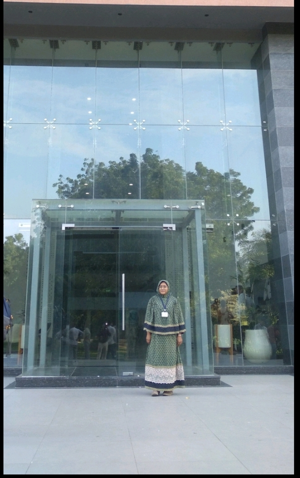
ABOUT ME
Hi, I’m Zahra Zaranwala, an Electronics & Communication Engineering student with a deep interest in Artificial Intelligence, Embedded Systems, and Smart Technologies. I am driven by curiosity and a strong desire to understand how intelligent systems work and how they can be designed to solve real-world problems. Throughout my academic journey, I have developed a solid foundation in communication systems, signal processing, and core electronics. I actively enhance my skills through hands-on technical projects, internships, and certifications such as Lean Six Sigma Yellow Belt and Generative AI. I enjoy combining theoretical knowledge with practical implementation to create meaningful technological solutions. Beyond academics, my participation in NCC — where I earned 2 Gold and 1 Silver medals — has shaped my leadership qualities, discipline, resilience, and teamwork skills. These experiences have strengthened my confidence and taught me the importance of consistency and responsibility. Still, I am strengthening my understanding of Machine Learning and Data Science fundamentals, focusing on core concepts such as data analysis, model building, and algorithmic thinking and Still I am continuously learning I am currently seeking internship opportunities in AI, Embedded Systems, and Automation, where I can apply my knowledge, gain industry exposure, and grow into a competent and impactful technology professional.
EDUCATION SECTION
🎓 Bachelor of Engineering (B.E.)
Government Engineering College, Dahod
2023 – PresentCurrently in 6th Semester Interested in AI, Robotics & Communication Systems Key Subjects: Analog Communication, Digital Communication, MP/MC , ELECTRONICS etc
🏫 Higher Secondary (12th Grade)
ST STEPHEN’S HIGHER SECONDARY SCHOOL
Year of Completion: 2022-2023Science Stream (Physics, Chemistry, Mathematics)
🏫 Secondary School (10th Grade)
ST STEPHEN’S HIGHER SECONDARY SCHOOL
Year of Completion: 2021-2022Developed academic discipline & technical curiosity
CERTIFIED-COURSE/WORKSHOP
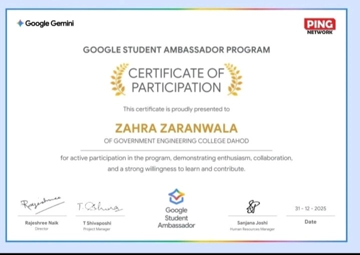
Google Student Ambassador
Proudly served as a Google Student Ambassador, representing Government Engineering College, Dahod. Led and actively contributed to tech initiatives, collaborated with a dynamic student community, and gained hands-on exposure to Google technologies. Strengthened leadership, communication, and teamwork skills while driving innovation on campus. Grateful for the mentorship and opportunity to grow as a future tech leader.
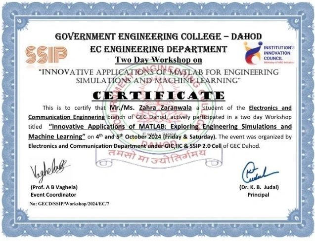
Matlab ssip
Certificate Matlab ssip I am excited to share that our campus has arranged 2 days workshop on 4th and 5th October. The workshop was on MATLAB. This workshop was arranged by our principal sir DR K.B judal sir and faculty members of our EC department. The workshop was fantastic,interesting with lots of knowledge. With that this session was also Hands-on-session with lots of fun. We learned practical used of MATLAB as well how it is useful in future. Also we learned topic like Machine learning and it's classification ,train-test split,overfitting vs.underfitting,Regression etc..
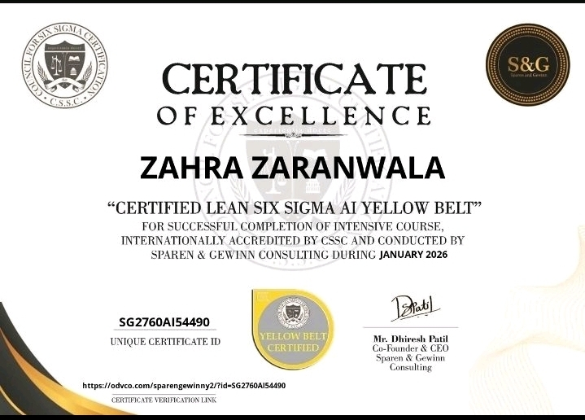
🌟 Lean Six Sigma AI – Yellow Belt
Successfully earned the Certified Lean Six Sigma AI – Yellow Belt (CSSC accredited) in January 2026, clearing the final exam on my first attempt. Gained strong foundations in DMAIC methodology, process improvement, waste reduction, and AI-driven decision-making. Developed a structured, data-driven approach to problem-solving and quality enhancement. Committed to applying these principles in engineering and real-world innovation. 🚀
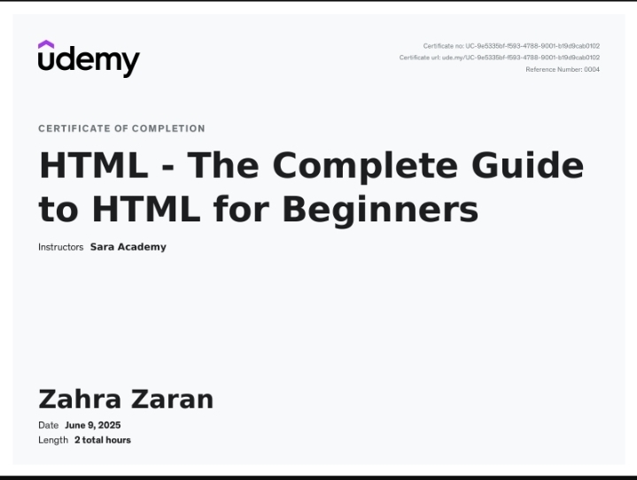
HTML FOR BEGINNERS
Completed the 'HTML - The Complete Guide to HTML for Beginners' course on Udemy. I am excited to expand my skills in web development and build amazing things
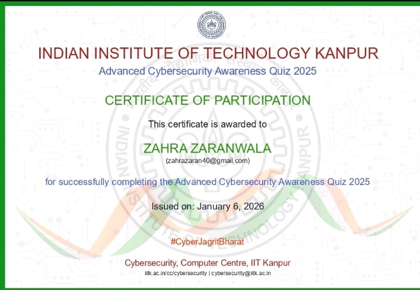
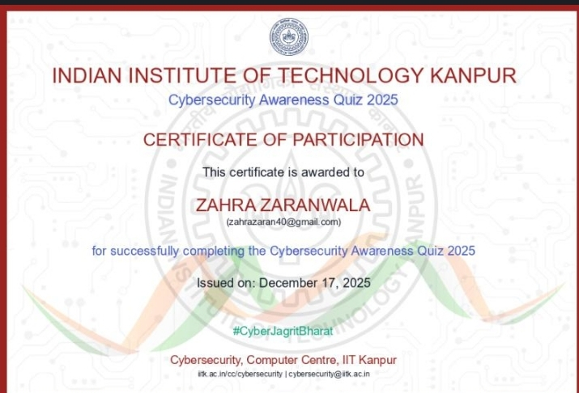
🔐 Cybersecurity Awareness – IIT Kanpur
Successfully completed the Cybersecurity Awareness Quiz 2025 and Advanced Cybersecurity Awareness Quiz 2025 organized by the Indian Institute of Technology Kanpur under its Cybersecurity initiative. Enhanced my understanding of cyber threats, data protection, safe authentication, and responsible digital practices. As an Electronics & Communication Engineering student, this experience strengthens my commitment to secure and ethical technology development.
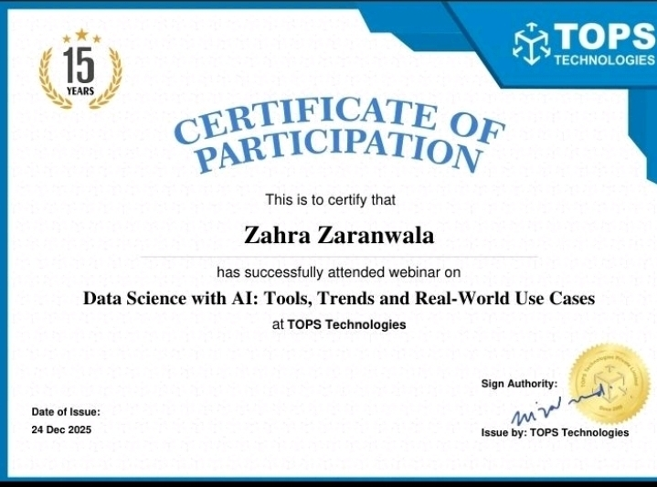
🤖 Data Science with AI
Attended the webinar “Data Science with AI: Tools, Trends & Real-World Use Cases” by TOPS Technologies. Gained insights into AI-powered data science workflows, industry tools, emerging trends, and real-world applications across domains. Strengthened my understanding of how intelligent systems drive data-driven decision-making.
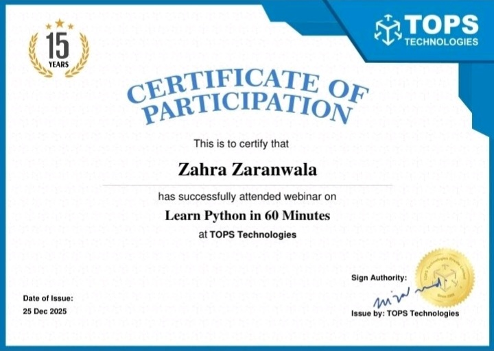
🐍 Learn Python in 60 Minutes
Participated in the “Learn Python in 60 Minutes” webinar by TOPS Technologies. Developed a clear foundation in Python basics, syntax, and logic building — enhancing my programming skills as an Electronics & Communication Engineering student preparing for AI and tech-driven careers. 🚀
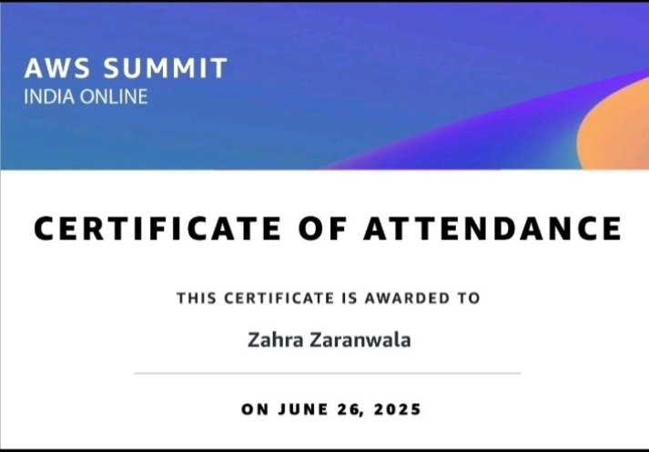
AWS Summit India Online
🌟 Thrilled to attend the AWS Summit India Online 2025! Attended AWS Summit India Online 2025 to explore the latest advancements in cloud computing, AI/ML, and AWS solutions. Gained insights from expert-led sessions and real-world industry use cases. A valuable experience learning about the future of cloud, AI, and AWS technologies.
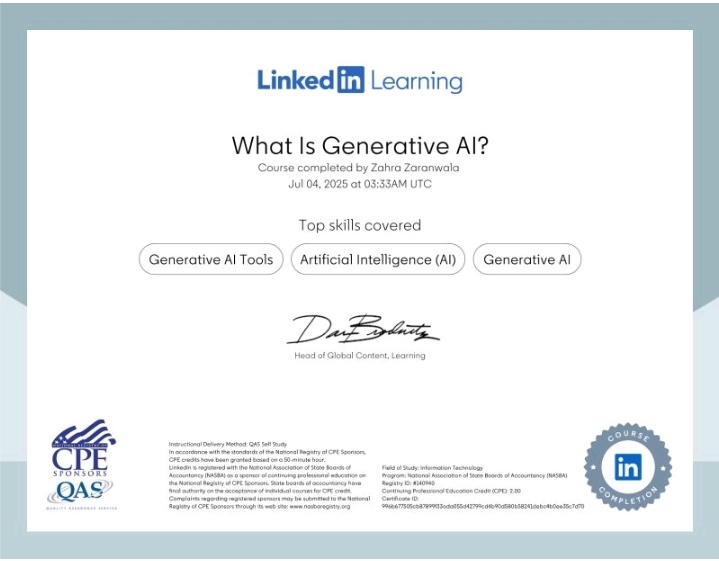
🤖 Generative AI – LinkedIn Learning
Completed a Generative AI course via LinkedIn Learning, gaining foundational knowledge of AI models that create content such as text, images, and code. Learned about large language models (LLMs), prompt engineering, ethical AI use, and real-world applications of generative tools in productivity, automation, and innovation. This course strengthened my understanding of emerging AI technologies and their impact on modern engineering and digital transformation.
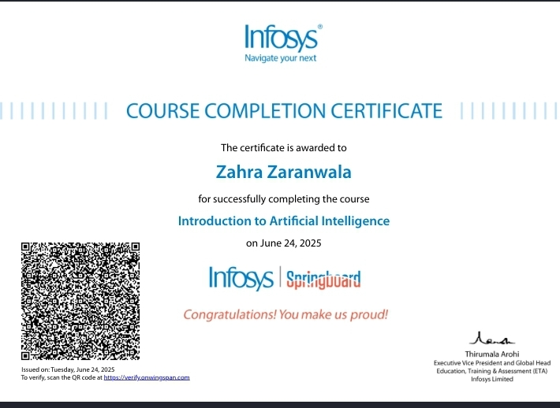
Introduction to Artificial Intelligence
📜 I’m proud to have completed the "Introduction to Artificial Intelligence" course offered by Infosys Springboard on June 24, 2025. Through this course, I gained a strong understanding of fundamental AI concepts such as machine learning, neural networks, natural language processing, and real-world AI applications. It also helped enhance my problem-solving and analytical thinking skills, laying a solid foundation for my future journey in AI and technology. Looking forward to applying this knowledge in building innovative AI-driven solutions! 🚀
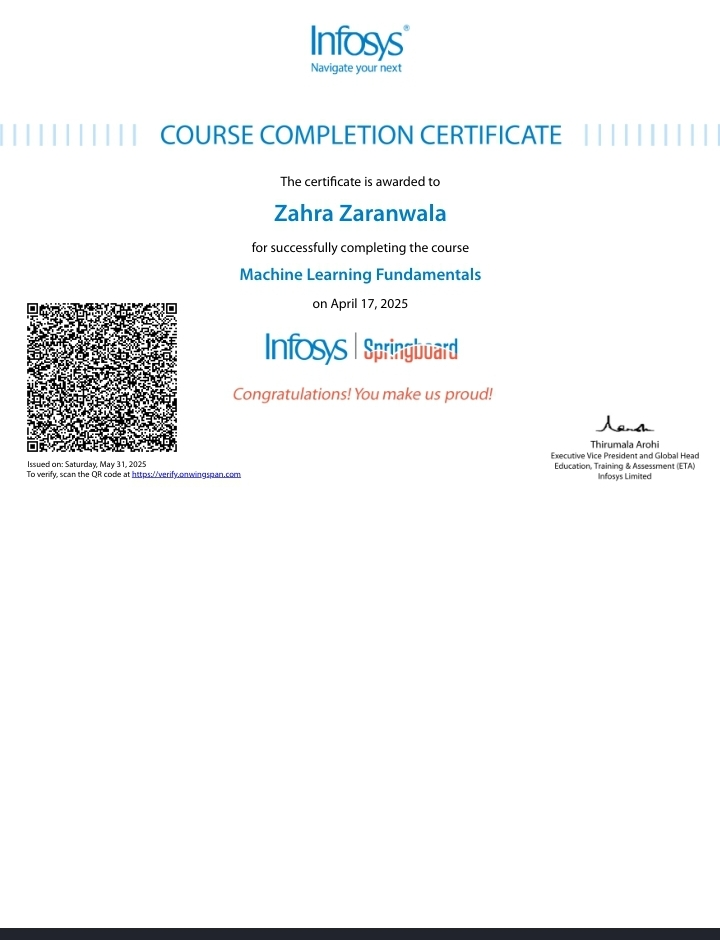
Machine learning fundamentals
Learning never stops! I’ve just completed the Machine Learning course from Infosys and gained valuable insights into Ai Predictive model. Name: Machine Learning Issuing Organization: Infosys Issue Date: 31st May 2025 🎉 Just completed a Machine Learning course with Infosys! It was a great opportunity to deepen my understanding of ML algorithms, model evaluation techniques, and real-world applications. Grateful for the chance to upskill and explore the world of data and AI
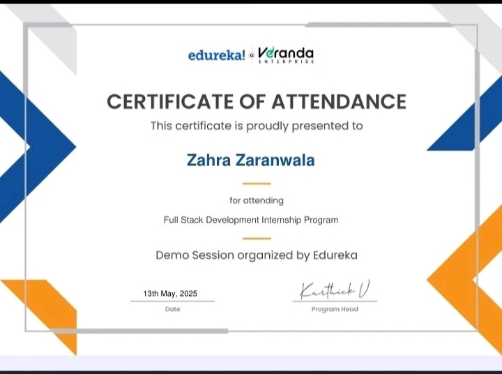
💻 Full Stack Development – Demo Session Certificate
Earned a certificate after attending a Full Stack Development demo session by Edureka. Gained clarity on essential programming languages, project building strategies, internship pathways, and how to start a full stack career. The session also highlighted industry-based training and performance-driven certification opportunities. 🚀
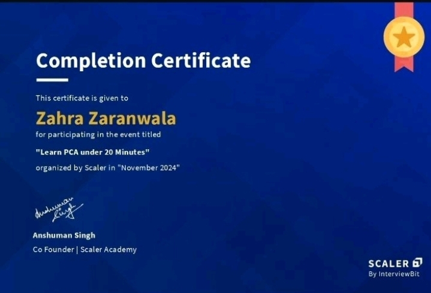
Principal Component Analysis
Today I came with certificate that I received after completion session on Principal component analysis. In this session I learned PCA without maths. What I learned about PCA? 1-what is PCA 3-How we can convert from 2 dimensions to 1 dimensions with the help of PCA. 4-where PCA is used? So this are topic I learned about Principal component analysis.
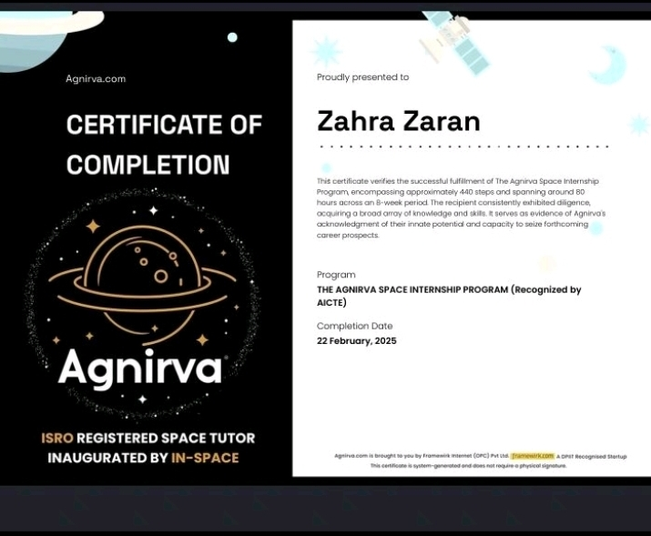
The Agnirva Space Internship Program
I am delighted to share that I received certificate an badges on completion of agnirva space program. This is cource they provided in which they give knowledge of space related information like about climate,cold War in space,different types of radiation proposals formation etc and many more things. I learned lot and lots of things from this program.
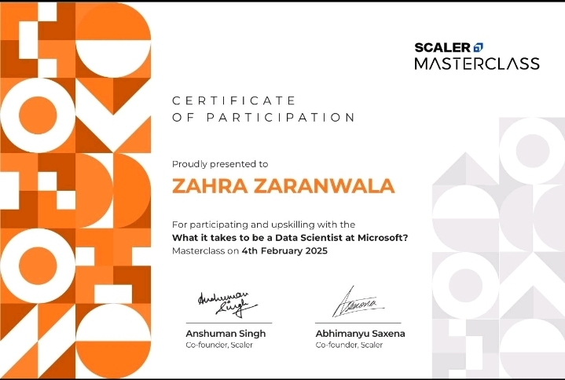
Data Science at Microsoft
Here again I came with certificate that I achieved after completion of live classes on scaler academy. The topic was what it takes to be a data scientist at Microsoft. It was live classes of 2.5 hour held on 4th February. The topic that covered in this are as follows:- 1-Introduction of data scientist 2-polls to known. 3-which are skills required to take on Microsoft. 4-what are rounder of interview in Microsoft for data scientist. 5-What are projects made. It is really a wonderful knowledgeable session in which I learned lots of things with fun.
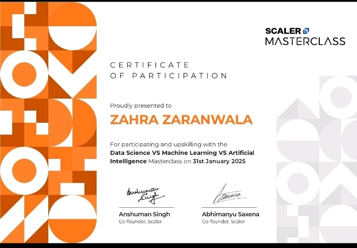
Data science vs Machine Learning vs Artificial Intelligence
Today I came with certificate that I achieved by attending session on topic of Data science VS machine learning VS Artificial Intelligence on 31st January. it is wonderful sessions of mine till now. I learned lot of things from this session. The main topic covered in this session are:- 1-Defination of machine learning,Artificial Intelligence and data science. 2-core components and methodologies of machine learning,data science and Artificial Intelligence. 3-Application of data science,machine learning and Artificial Intelligence. 4-Tools and technology used in machine learning,data science and Artificial Intelligence.
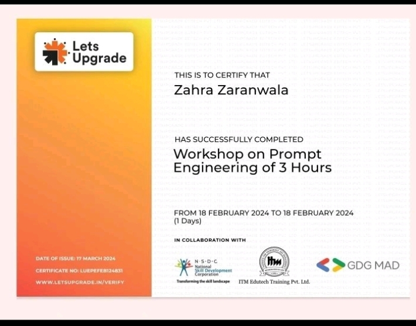
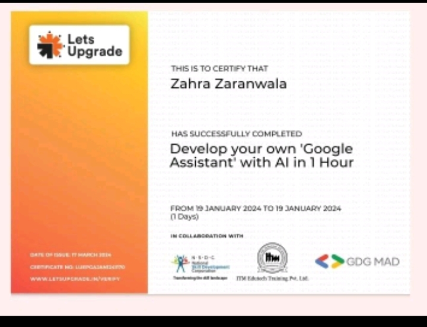
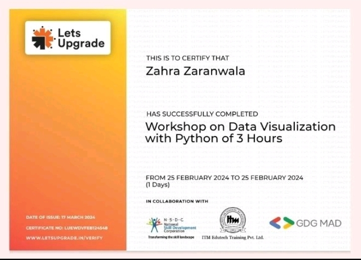
Workshop
I am excited to share that I successfully completed 3 online course in which 2 were the workshops and 1 sessions. This course provided by #let'supgrade team members. The 3 cources are as follows:- 1-workshop on prompt engineering which held on 18 February 2024. The duration of this course was of 3 hours. 2-Workshop on data visualization which held on 25 February 2024. The duration of this course was of 3 hours. 3-Develop your own Google Assistance with AL which held on 19 January 2024. The duration of this course was of 1 hour. I learned lot of things from this course. Also I learned how to use this tools. And also how this tools help in future. I special thanks to #letsupgrade team members for providing this online course.
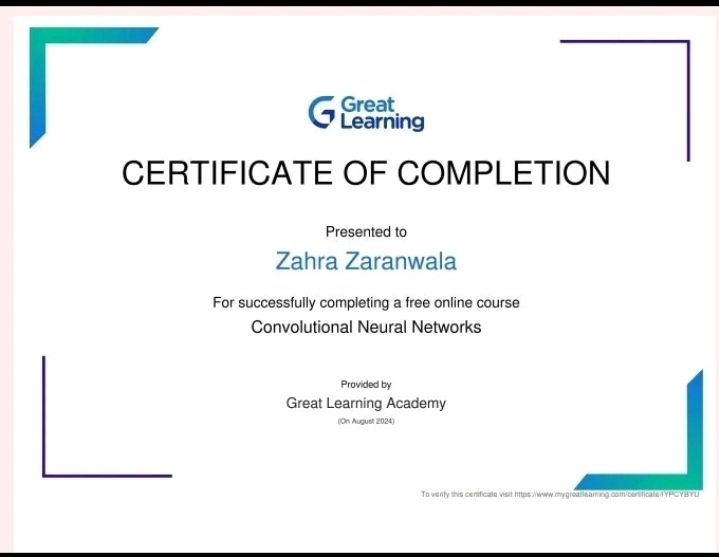
Convolution neutral network
I am excited to share that I have successfully completed one of the online courses that is provided by #greatlearning. This course is based on convolution neutral network. It is one of the topics of machine learning. This topic covered 2 things that are as follows:- 1:- Image processing 2:- Batch normalization In image processing, I learned how to convert analog image into digital image, digital noise, source of noise, Argumentation, Max Pulling...etc. And in Batch Normalization I learned how it works, how it is beneficial, what are the side effects... etc.
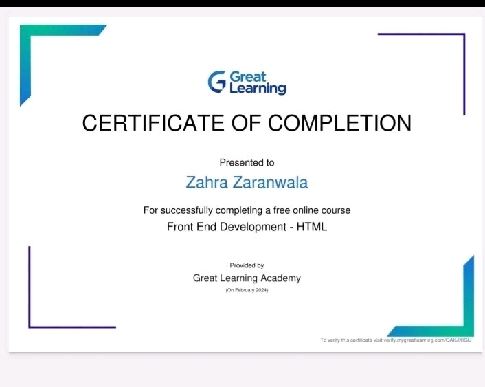
Front-end Development:-Html
I am very excited to share that I started my coding journey and happy to share that I completed successfully "Front End development-HTML "course provided my great learning. And I got certification of completion.
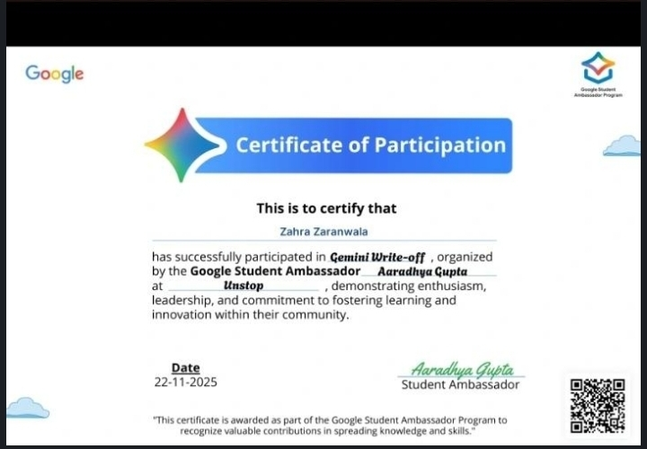
GEMINI WRITE-OFF
Excited to share that I successfully participated in the Gemini Write-off, organized by the Google Student Ambassador Program. Grateful for this opportunity to enhance my learning and innovation skills
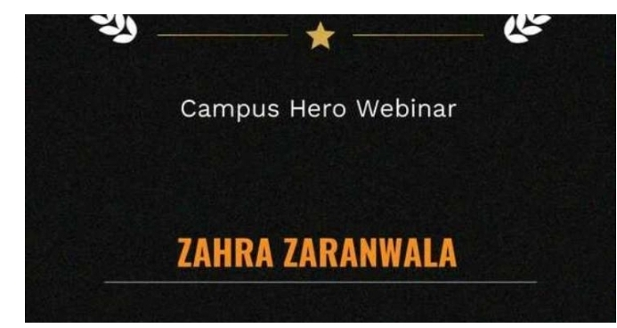
🚀 Campus Hero Webinar
Successfully participated in the Campus Hero Webinar by Coding Ninjas. Gained valuable insights on building a strong coding culture, becoming a tech leader on campus, and connecting with a wider tech community. Inspired to continue growing in Electronics & Communication Engineering and technology.
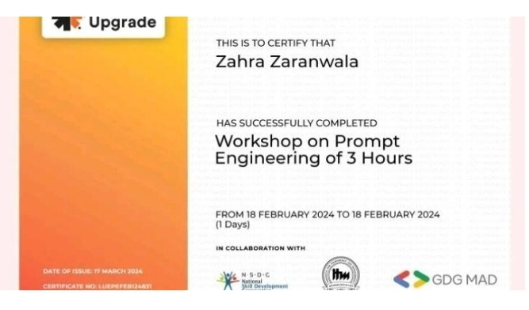
WORKSHOP ON PROMPT ENGINEERING FOR 3 HOURS
I've successfully completed the Workshop on Prompt Engineering by LetsUpgrade in collaboration with ITM Edutech Training and GDG MAD! This intensive 3-hour workshop has equipped me with valuableskills in prompt engineering, which is crucial for leveraging the power of AI. Looking forward to applying these techniques to enhance mytechniques to enhance my projects and contribute to the AI community. #PromptEngineering #LetsUpgrade #AI #ITMEdutech #GDGMAD"
BADGES
DUELIST
WARRIOR
ACE
TECHNICAL INTERNSHIP
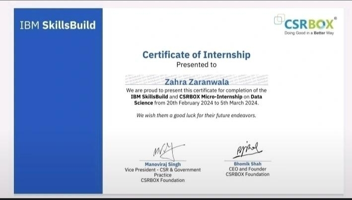
IBM SKILLSBUILD AND CSRBOX MICRO INTERNSHIP
Successfully completed a Data Science Micro-Internship organized by IBM SkillsBuild in collaboration with CSRBOX Foundation • Gained hands-on exposure to Data Science fundamentals, including data analysis, data handling, and basic machinelearning concepts • Learned practical applications of AI and data-driven decision making in real-world scenariosWorked with industry-standard tools and methodologies to understand data workflows • Enhanced skills in analytical thinking, problem-solving, and technical communication • Earned an official internship certification recognized by IBM SkillsBuild and CSRBOX
REMOTE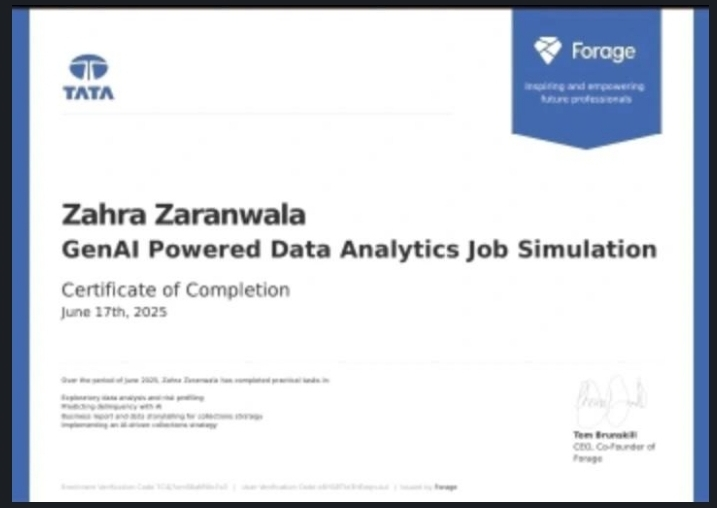
GenAI-Powered Data Analytics Intern (Virtual Simulations)
Completed a virtual internship focused on AI-powered data analytics. Gained hands-on experience in: Exploratory dataanalysis and data profiling Predictive modeling using AI Business report writing and strategic data storytelling Designing and implementing an AI-driven collections strategy Strengthened skills in using AI for business intelligence, improving decision-making with data, and communicating actionable insights.
REMOTE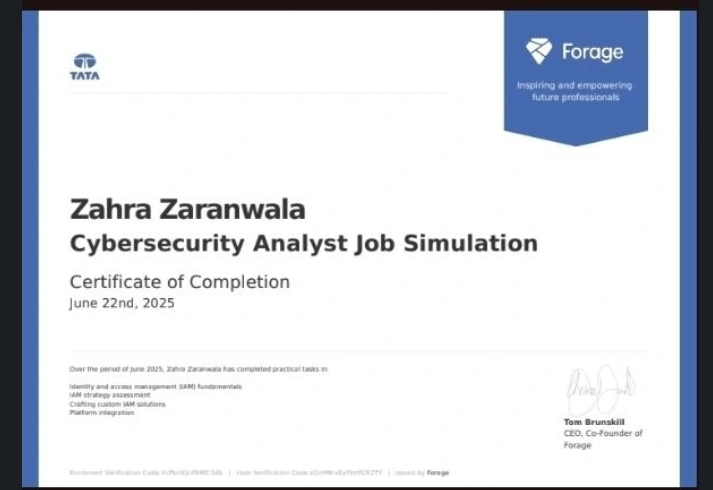
Cybersecurity job simulation
Completed a virtual job simulation focused on cybersecurity fundamentals. Gained practical experience in: Identity and Access Management (IAM) fundamentals. IAM strategy assessment Designing custom IAM solutions. Platform integration. This experience enhanced my skills in assessing cybersecurity risks, implementing IAM protocols, and understandingreal-world cybersecurity workflows.
REMOTE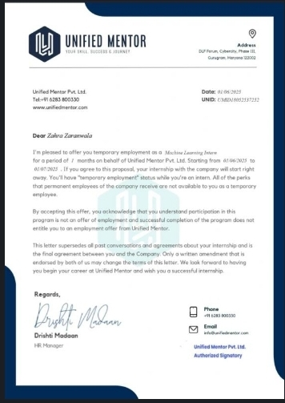
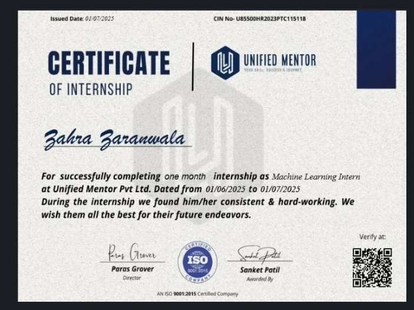
Machine learning internship
Worked as a Machine Learning Intern, gaining hands-on exposure to data analysis, model building, and ML fundamentals. Performed data preprocessing, including data cleaning, handling missingvalues, and feature selection. Implemented basic Machine Learning models using Python for prediction and classification tasks. Analyzed datasets to identify patterns and insights for decision-making. Improved understandingof ML workflow. Demonstrated consistency, discipline, and strong learning attitude during the internship period.
REMOTE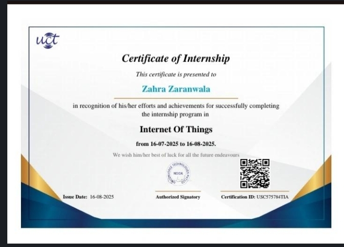
INTERNET OF THINGS INTERN
Completed a structured internship in Internet of Things (IoT) • Learned basics of sensors, microcontrollers, and IoT architecture • Improved understanding of real-world engineering systems
REMOTE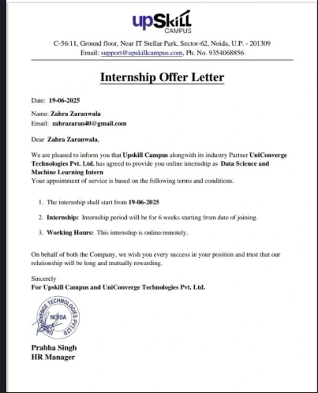
Data science and machine learning intern
Selected for a 6-week online internship focused on real-world applications of DataScience and Machine Learning. Collaborated with industry experts to strengthen problem-solving and analytical thinking. Developed a foundational understanding of ML workflows and deployment.
REMOTEPROJECTS


"Design and create my own protfolio" using html css language
Today I came with new and exciting journey I begin and here it is: Proud to Share My First Project! I’m excited to present my first technical project: "Design and create my own protfolio" using html and css language. This project introduced me to practical experience of coding . What I did: 1- I write information using html language. 2- design a portfolio using css language. Looking forward to building more and sharing as I grow! what are the sections I add: 1-My skills 2-My experience 3-My contact 4-My project etc


IMPROVED VERSION OF PROJECT 2
I'm excited to share an 🚀 Just launched an upgraded version of Project 2 improvedversion of my previous project, [Project 2 ROYAL ENTERPRISEZARANWALA]. This updated version, titled [ZARANWALAGROCERY], adds powerful features, optimizations, and a more user-friendly experience. Added [new features or technologies, e.g., login system, responsive design, database]. Improved for better accessibility and performance. Fixed previous limitations such as [e.g., speed, usability, bugs]. 💻 Tech Stack: HTML, CSS, JavaScript 📚 This project helped me improve my skills in .[specific skills like html,CSS,JavaScript.], and taught me the importance of [e.g., feedback-driven development, user testing, scalability]. ✨ It includes major improvements like images, presentation and many more 🎯 The goal was to fix previous limitations and create a more polished, user-friendly version.
AWARDS/ACHIEVEMENTS
🏅 Two Gold Medals – NCC Camp
Awarded two Gold Medals by the CEO sir of 34 Battalion NCC,himmatnagar for outstanding performance and excellence during the NCC Camp.
2025🥈 Silver Medal – Army Attachment Camp
Awarded a Silver Medal by Indian Army officials for exceptional performance and discipline during the Army Attachment Camp.
2025Volunteer Experience
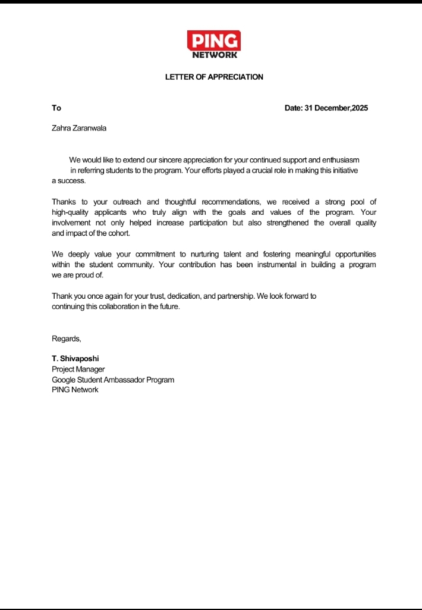
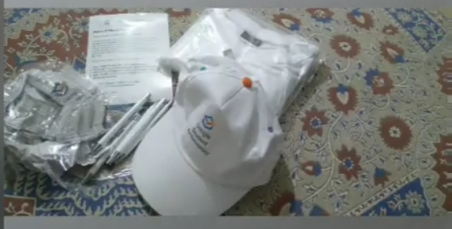
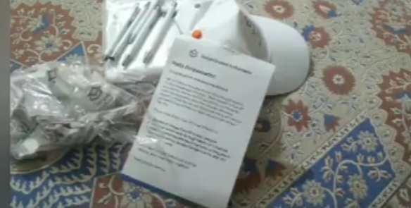
🌟 Honored to Receive a Letter of Appreciation | Grateful for This Learning Journey 🌟
I’m truly grateful to share that I received a Letter of Appreciation for my contribution to the Google Student Ambassador Program. This experience has been incredibly meaningful for me. Through this initiative, I had the opportunity to support student outreach, help connect motivated learners with the program, and contribute toward building a strong and aligned applicant community. Being trusted with this responsibility helped me develop important skills such as communication, coordination, leadership, and community engagement. What made this journey special was not just the recognition, but the chance to positively impact fellow students by guiding them toward valuable learning opportunities. It taught me how small efforts, when done consistently and sincerely, can create real impact. I’m thankful to the program team for their guidance and encouragement, and for believing in my abilities. This recognition motivates me to keep improving myself, exploring new opportunities, and contributing wherever I can — especially in areas related to technology, learning, and student empowerment. As an Electronics & Communication Engineering student, experiences like these strengthen my confidence and push me closer to my professional goals. I look forward to continuing my growth journey, gaining more hands-on exposure, and making meaningful contributions in the future. 2025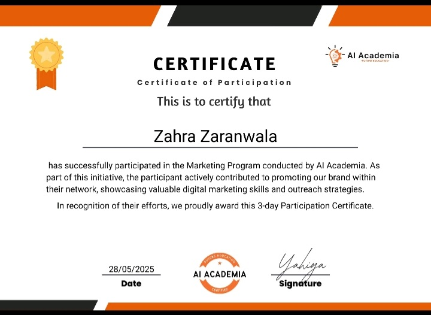
Marketing Certificate
Completed a hands-on program focused on applying artificial intelligence in modern marketing. Developed practical skills in: content strategy, and digital ads using AI tools Platforms covered: Google Analytics, ChatGPT, Meta Ads, and others This certificate strengthened my ability to design data-informed marketing strategies using cutting-edge AI technologies.
2025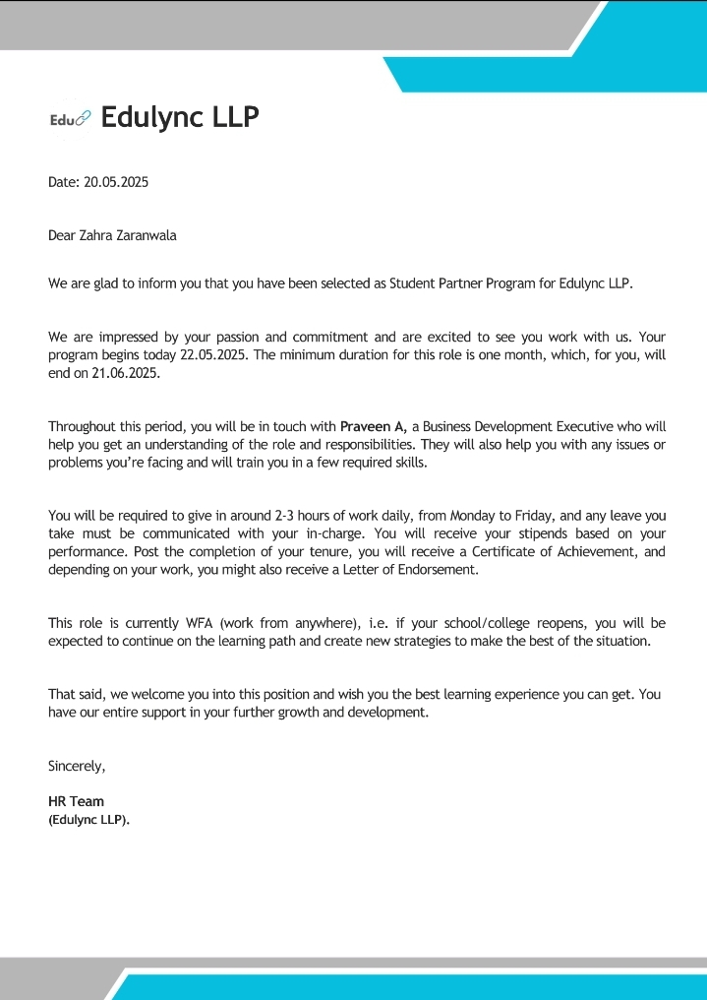
edulync LLP Student Partner (ISP)
Excited to share that I’ve been selected as an edulync LLP Student Partner (ISP)! As part of this role, I’ll be representing EDULYNC LLP at my college, promoting career-building opportunities, and helping fellow students find internships and upskill through online trainings. Looking forward to learning more about marketing, leadership, and communication throughout this journey!
2025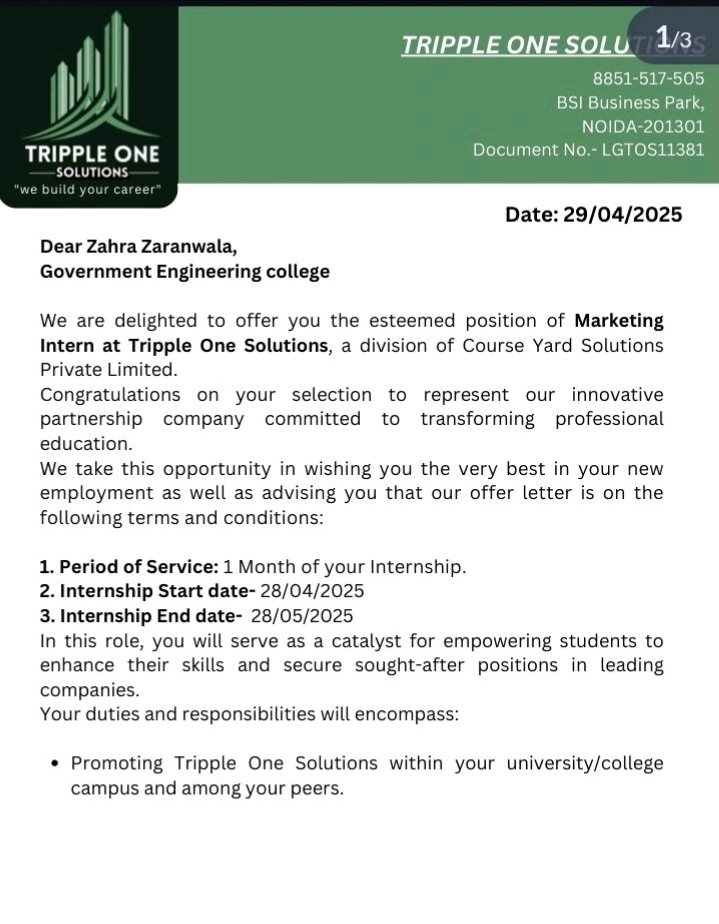
Offer letter from tripple one solution
I am glad to announced that I received offer letter from tripple one solution. And I am excited to grab this opportunity and learn new skills. This is the type of opportunity I am looking for long time and I can't express now how I feel after I got this opportunity. Also anyone like to connect with me to grab same opportunities connect with me. Also they provide 3 types of courses. 1-self paced program 2-Mental led program 3-professional program
2025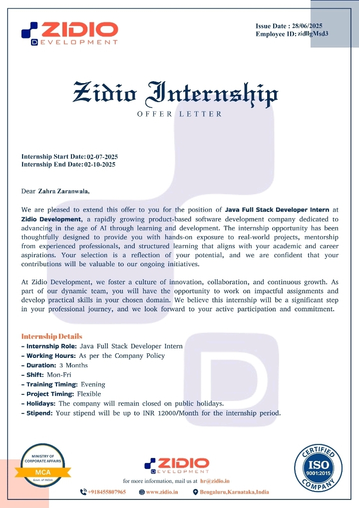
offer letter for the position of Full Stack Java Development Intern at Zidio Development
🌟 Thrilled to share a new milestone in my journey! This opportunity marks the beginning of my transition from learning to applying — and I’m excited to deepen my understanding of: 🔹 Java & Spring Boot 🔹 MySQL & REST APIs 🔹 Frontend technologies 🔹 Real-world software development practices I’m truly grateful for this opportunity and ready to give it my best. Here's to growing, coding, and creating impactful solutions! 🚀
2025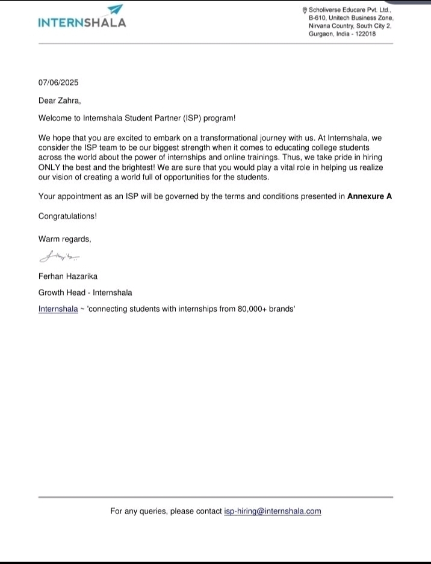
🎉 Excited to Begin My Journey as an Internshala Student Partner (ISP)!
📅 07/06/2025 I’m thrilled to share that I’ve been selected as an Internshala Student Partner (ISP)! Internshala is one of India’s leading platforms for internships and training programs, and I feel honored to be part of a mission that empowers students through opportunities and skill-building. As an ISP, I look forward to: ✨ Promoting valuable internships and online trainings ✨ Enhancing student engagement and professional awareness ✨ Connecting my peers with 80,000+ brands through Internshala Looking forward to making the most of this learning experience and creating real impact!< 2025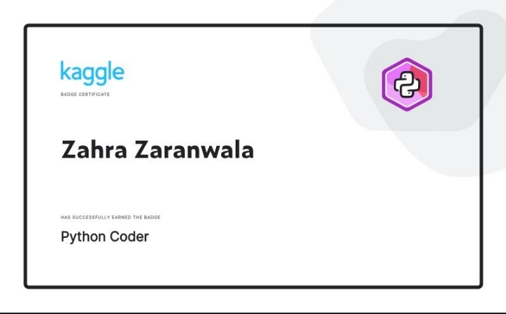
Python coder
I’ve successfully earned the Python Coder badge from Kaggle! This badge recognizes my proficiency in Python programming, covering key concepts like data types, functions, loops, conditionals, and working with libraries like Pandas and NumPy. This is an important step in my journey toward becoming an AI Product Engineer, and I’m looking forward to applying these skills in real-world data and AI projects.
2025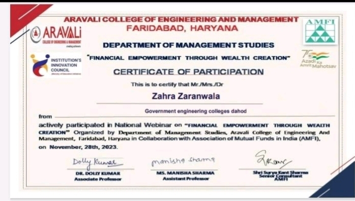
Financial Empowerment
I am blissful to share that I attended webinar on 28 November 2023 . The Topic of webinar is on "Financial Empowerment ". I learned lot of things from this webinar like How to think about future investments?,How to save money for future?Where money are safe in future?..etc.
2025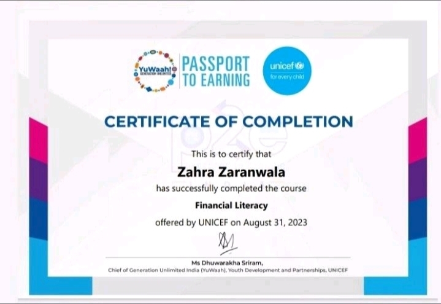
"Foundations of Finance – Certificate of Completion"
Successfully completed the Foundations of Finance program, gaining essential knowledge of financial principles, budgeting, and business decision-making. This certification strengthened my analytical thinking and enhanced my understanding of how finance supports strategic and technical growth.
2025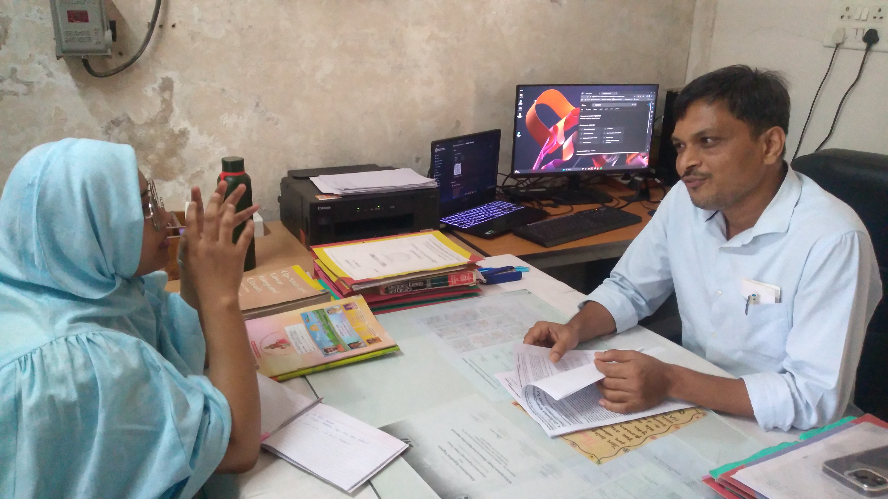
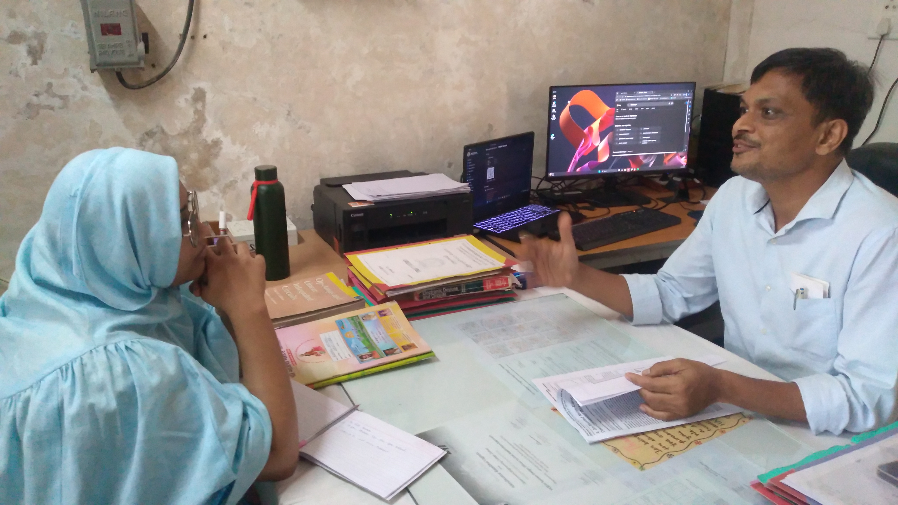
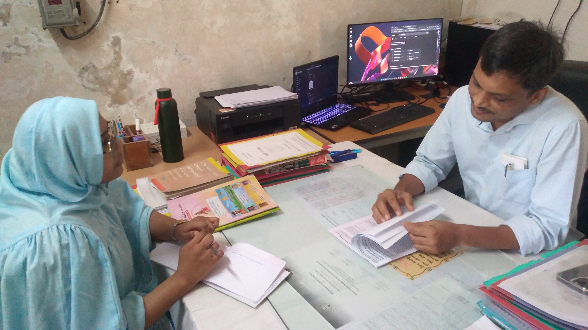
Faculty Interview Session – Professional Development Initiative
As part of the Finishing School program, I conducted a formal interaction session with faculty members. This experience helped me improve: Professional communication Structured questioning skills Confidence in academic discussions Career-oriented thinking It was a valuable opportunity to engage in insightful dialogue and enhance my professional presence.
2026LEARDERSHIP AND ACADEMIC ENGAGEMENT VIDEOS
Learning Journey
2025 has been a year of growth, learning, and consistency. This short video is a reflection of what I’ve worked on, learned, and achieved so far — from academics and skill development to personal discipline and goal alignment. Grateful for the journey, lessons, and people who supported me. Looking forward to building more in the coming year. 🚀
INDUSTRIAL VISIT
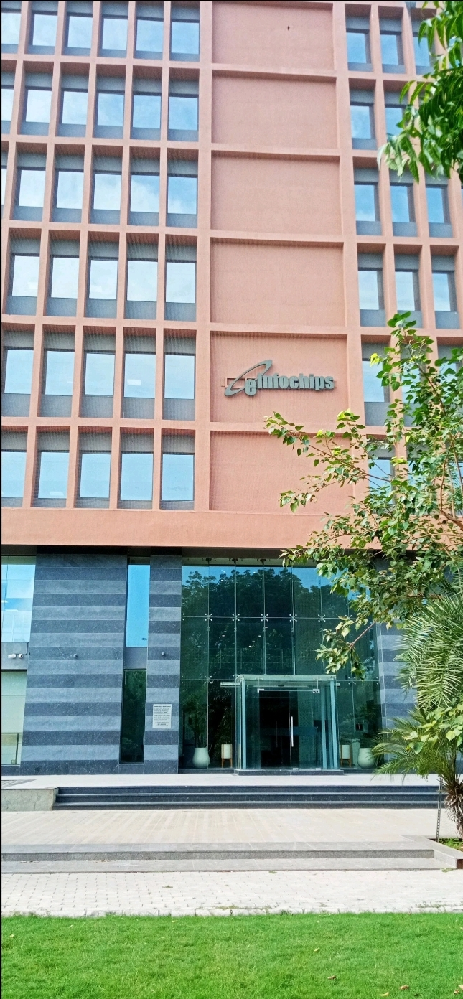
eInfochips Ahmedabad Visit
Date: 24 September 2025
Visited eInfochips Ahmedabad for industry exposure and real-world learning experience. The visit helped bridge classroom knowledge with practical applications.
Key Learnings: Continuous learning, skill enhancement, importance of communication skills, exposure to real industry environment.
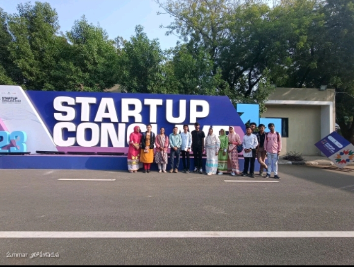
Startup Conclave 2023
Date: 8 December 2023
Learned about Startup India initiative launched by PM Narendra Modi. Explored innovation ecosystem, smart farming, EV technology, irrigation systems and entrepreneurship opportunities.
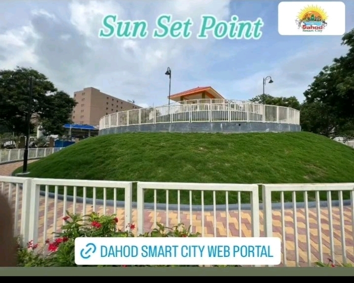
Smart City Dahod Visit
Learned about traffic management systems, smart poles, surveillance cameras, waste management systems and centralized control room operations.

INDIAN AIR FORCE EXHIBITION
We were honored to host the Indian Air Force's Induction Publicity Exhibition Vehicle Drive today at Government Engineering College, Dahod. This event was organized for students from various engineering branches, and we are thrilled to share that more than 250 students participated with great enthusiasm! A heartfelt thank you to Wing Commander G G Maxmillan, Flight Lieutenant Karan Gurung, Flying Officer Aparna Kanwar, and the incredible Team Disha from AIR HQ New Delhi for their dedication and efforts in igniting curiosity and passion among young minds. Their insights into the vast career opportunities in the Indian Air Force were truly inspiring and eye-opening for all attendees. Such initiatives not only guide students towards a bright career but also instill a sense of pride and motivation to contribute to our nation.
TECHNICAL SKILLS
Programming Languages
Python, HTML, CSS, JavaScript
AI/ML Concepts
Principal Component Analysis (PCA), Neural Networks, NLP
Tools & Platforms
MATLAB, Visual Studio Code, Arduino IDE
Productivity Tools
Microsoft Office, GitHub (Beginner)
Other Core Skills
Basic Electronics & Circuit Analysis
Analog & Digital Electronics (Beginner)
Communication Skills
Time Management
Willingness to Learn
CONTACT ME
zaranwalazahra@gmail.com
EMAIL ME ONLY FOR PROFESSIONAL CONTACT LIKE FOR PROJECT,JOB.INTERNSHIP ETC